Introduction
In this tutorial, we are going to create multiple types of foliage using a single GroundCover object. By the end, you should know how to add a GroundCover object, create a 2D material for it, assign terrain layers, and mix different variations of 3D shapes and 2D
images.
Setup
This article will use a new project created from the Full template, which includes sample assets for testing and learning. To save time and focus on the World Editor, we will use the sample assets and learn about asset creation later.
If you have not covered the Building Terrains Tutorial, then please do so before working through this tutorial. It assumes that you have gone through that one before starting here.
Switch to the Terrain Painter editor by choosing Editors->Terrain Painter from the menu or by hitting F3. On the right side of the screen, find the Terrain Painter Material Selector pane. This lists the current materials loaded and available to paint the terrain.
Since GroundCover is directly tied to Terrain Materials, you will want to make sure you have more than one available. If you only have one material available, click the New Layer button in the Terrain Painter Material Selector pane, and select a new material to load.
In this example, I am using a sand texture and a grass texture:
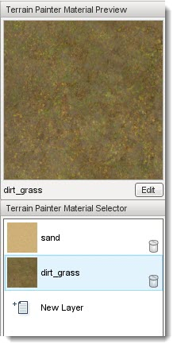
Select one of the materials and paint a small area on the terrain. We will be isolating a GroundCover example to this patch:
(click to enlarge)
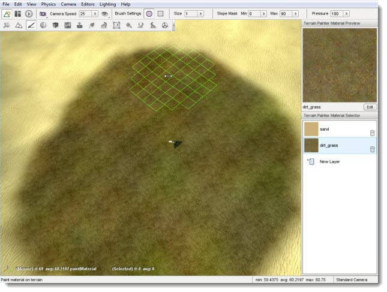
From the players perspective, you should still be able to distinguish between the terrain textures. This will help demonstrate the GroundCover populating on a specific layer:
(click to enlarge)
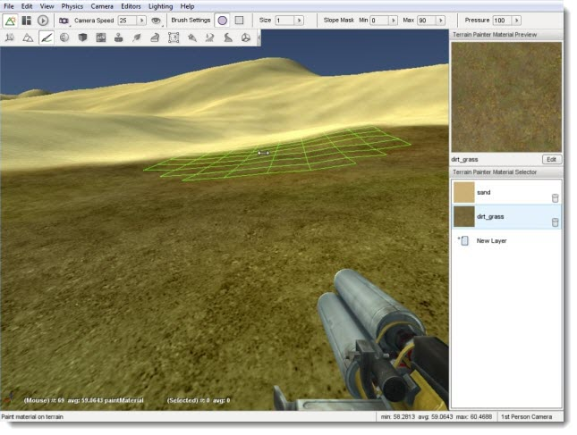
Adding GroundCover
To add a GroundCover object: switch to the Object Editor (F1); select the Library tab in the Scene Tree panel; click on the Level tab; double-click the Environment folder; and locate the GroundCover entry:
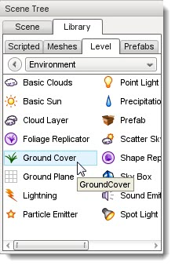
Double-click the GroundCover entry. The Create Object dialog box will appear:
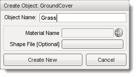
Enter a name for your GroundCover object. We will be creating a GroundCover object from scratch, so leave the rest of the fields blank for now, then click the Create New Object button. A new GroundCover object will be added to your level.
(click to enlarge)
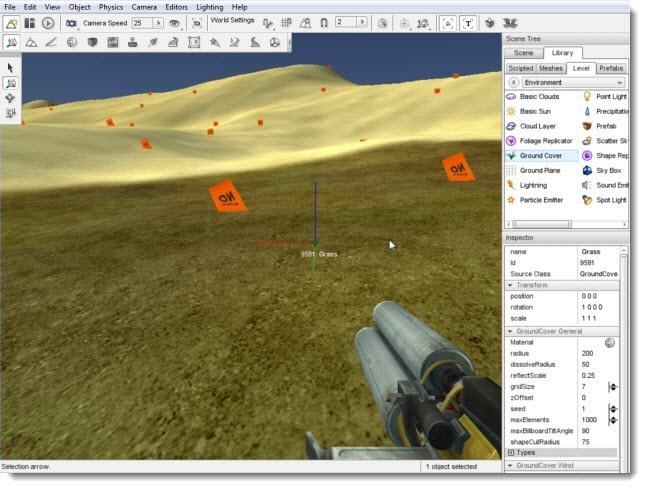
Creating a GroundCover Material
Because we did not select a material, the system will render small simple shapes on the terrain with the default orange "No Material" texture. To assign a material, scroll through the GroundCover properties until you get to the
GroundCover General section. In the Material field, click on the globe icon to open the Material Selector:
Material Field

When the Material Selector appears, you have the option to pick an existing material or create a new one. If you are working with the Full template, there will not be a decent grass texture loaded so we are going to create one. Click on the "Create New Unmapped Material" button:
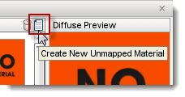
Now click the Select button at the bottom right of the dialog. At this point, the new material has been applied to the GroundCover. The system is still rendering an orange shape, but for a very different reason. Previously, we had no material selected. Now we have a material, but it has not been assigned a texture. Click on the Material Editor icon in the Tool Selector bar to activate the Material Editor tool:
Activate Material Editor
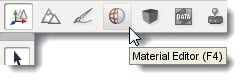
The Material Preview and Material Properties panes should now be visible on the right of the screen. Your GroundCover material will already be the active entry. At the top of the Material Properties pane find the
Material field and change the value to Grass . This will be the name of your new material. Press the Enter key to apply the change, and then click the Floppy Disk icon to save it.
NOTE: You MUST press Enter after typing your material name before clicking the save icon or your new material will not be saved!
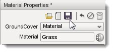
Next, scroll down to the Basic Texture Maps section. Right
now the Diffuse Map is assigned to the default "No Material" texture.
Click on the preview image or the Edit button:
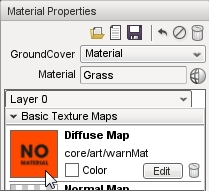
A file browser should pop up allowing you to select a texture. Navigate to the game/art/environment directory. Select the plant2.png texture, then click Open.
(click to enlarge)

If you are not using the Full Template, but do not have a
plant texture, you can use the following image (save to desktop or drag
to your folder):

After you load the plant2 texture as the Diffuse Map, your
Material Preview will update to show the rendering. The GroundCover in
your level will also automatically update. However, you will notice a
glaring problem. The material is rendering black where there should be
transparency:
(click to enlarge)
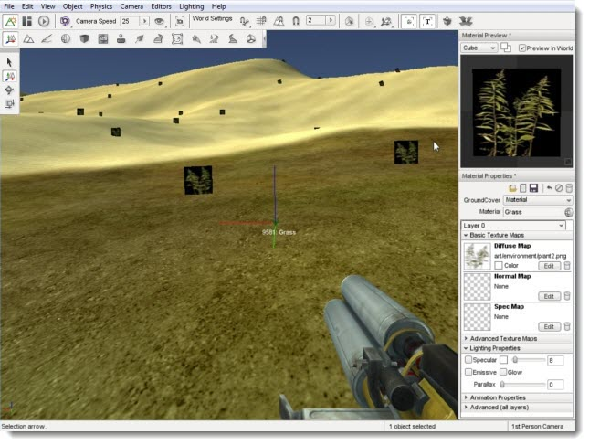
To fix this, scroll down to the Advanced (all layers) section of the Material Editor. Check the Alpha Threshold box, then set the value to something close to 20.13 (or whatever looks
best to you):
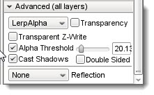
SAVE YOUR MATERIAL AGAIN by clicking the floppy disk icon at the top of the Material Properties pane. Once you are finished with your material, switch back to the Object Editor (F1). Your GroundCover should now be rendering the plant material you have selected. Now is a good time to also save your level.
(click to enlarge)
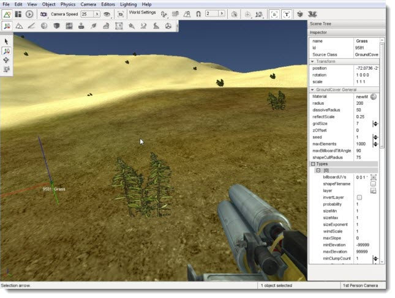
Assigning Terrain Material
Currently, the GroundCover is placing the grass material on all of the terrain:
(click to enlarge)
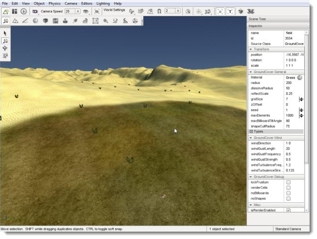
To limit the placement of GroundCover to a specific region, such as the area we painted previously, you must set the terrain layer for the Ground Cover. In the Scene Tree pane, click the Scene tab and select your grass GroundCover object. Scroll down to the
GroundCover General set of fields. GroundCover General contains a sub-section of properties, listed under
Types. Types is an array where each entry controls a section of the GroundCover. Expand the Types field by clicking on the + icon.

The GroundCover is a single object that is covering the entire terrain. The object itself is comprised of eight sections, Types[0] through Types[7]. Each section can be told what, where, and how to render a material or shape. You can feasibly have the GroundCover object rendering a unique material or shape on eight different terrain layers.
With the above information in mind, it is time to assign the GroundCover to terrain materials. Scroll through the properties until you get to Types[0]. Click on the box icon in the
layer field. The Material Selector for terrains should appear. Select the material you used earlier to paint the patch, such as the dirt_grass shown here:
(click to enlarge)
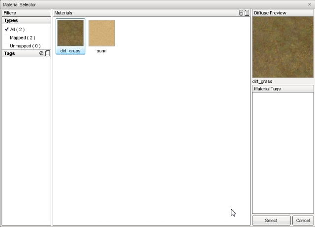
Click the Select button, the GroundCover will stop placing the plant shapes on the entire terrain. It should now only be placing the foliage on the patch that you painted:
(click to enlarge)
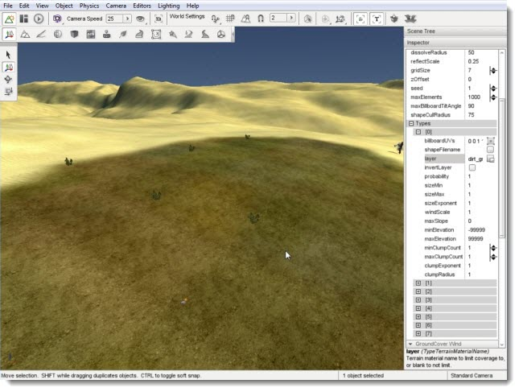
If you are having a difficult
time seeing this change, locate the maxElements field and increase the value dramatically:

The GroundCover should now be rendering with quite a few more shapes on the isolated terrain material. The higher the maxElements value, the more shapes will be rendered:
(click to enlarge)
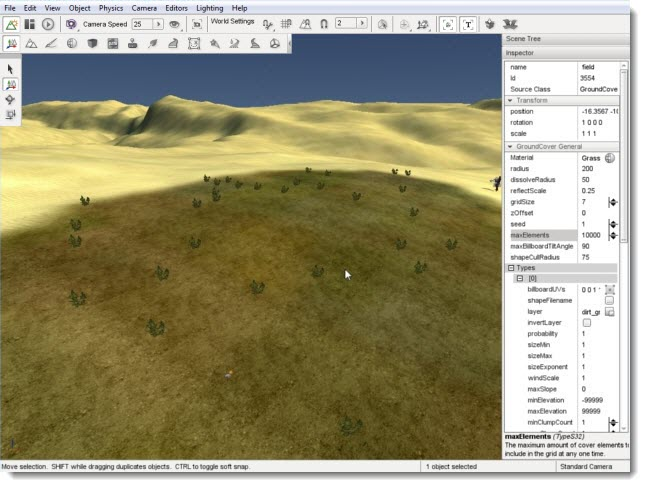
Just for the sake of testing, go back to the Types[0]->layer property. Click on the
box icon to open the Material Selector, then
choose the sand texture (or whatever your main material is):
(click to enlarge)
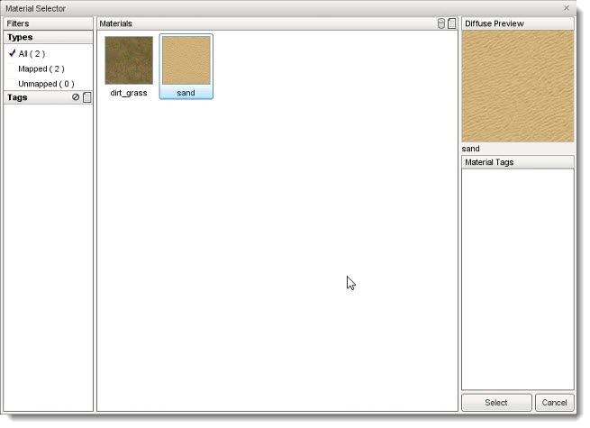
Click the Select button to apply the material
change. The plant billboard should now only be rendering on the main
terrain material, avoiding all others including the patch of you
painted earlier.
(click to enlarge)
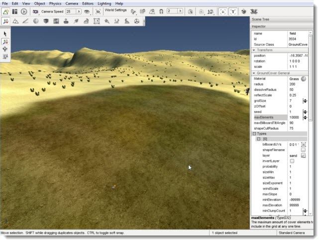
Before proceeding, go ahead and switch the Types[0]->layer field back to the isolated terrain material. Next, we will go through the more basic customizations of a GroundCover object.
Basic Modifications
Size Variations
Before we get into the really advanced changes, we will focus on editing a single section of the GroundCover: Types[0].
Right now, the GroundCovering should be rendering a single type of
material within an isolated section of the terrain. The following
changes will affect this section only.
Expand Types[0], then scroll down to the sizeMin and
sizeMax values. The default values should be 1 and 1, which means every shape will be rendered at the same size. Go ahead and change that by setting the sizeMin to 0.8 and sizeMax to 5.

There should now be a dramatic staggering in the size of the shapes. Some will be huge, while others will look smaller than they originally did. This is a great way to increase the realism of your GroundCover:
(click to enlarge)
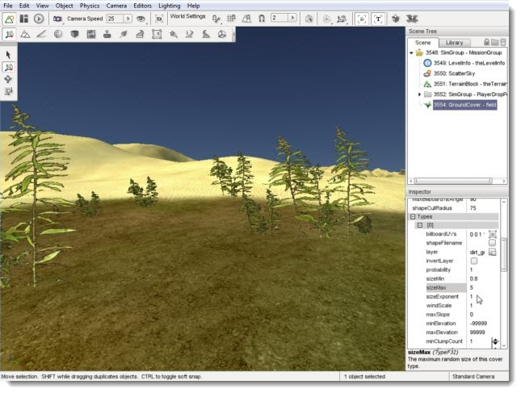
These sizes might be too extreme, so go ahead and balance them a little bit more so we can easily view the rest of our edits:
Elevation Limitations
The minElevation and maxElevation properties can be used to limit the GroundCover object to only generate shapes and materials within a range of terrain elevations. But, changes to these properties are difficult to see if your level is not set up to handle the parameters. We will walk through an example to illustrate. Go ahead and set the minElevation to 300. After doing so the GroundCover will disappear:
(click to enlarge)
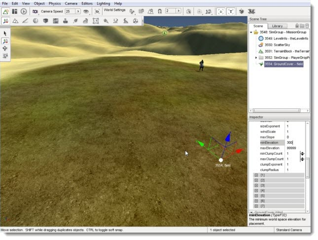
The elevation properties control the height range within which the GroundCover object will place shapes in your level based on the elevation of the terrain at each and every point. When the minSize was increased from -9999 to 300, that decreases the range within which shapes will be generated. he GroundCover object should now only be placing objects on the terrain where the terrains elevation is 300 meters and higher. The default elevation of TerrainBlock is higher than 300 meters , so it is too low for the GroundCover object to have placed shapes on it.
Perform a quick adjustment to illustrate this behavior.
(click to enlarge)
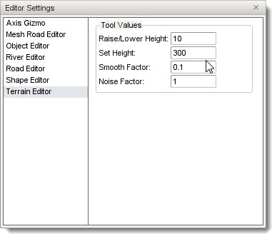
Open the Terrain Editor (F2), then switch to the Set Height tool .
On the toolbar at the top of the screen, find the Height field and change it to 300. Select a portion of the terrain that should have the GroundCover, then click on it. The terrain should instantly shoot up to 300 . If you move your camera to the top, you should now be able to see your GroundCover:
(click to enlarge)
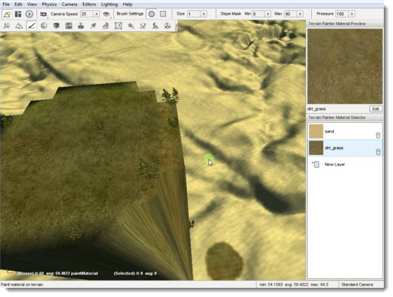
Go ahead and change the minElevation field back to -99999, so the grass returns to where it was originally
Clumping
The clumping ability of GroundCover is another way to add to
the realism or diversity of your level. The
clumping properties (minClumpCount, maxClumpCount, and clumpRadius) will cause the objects in your current Types[x] entry to group together in designated patterns.
To fully demonstrate this, make sure you can clearly see lots of
objects being placed by the GroundCover. For example, I have switched
to the sand terrain material (since I am using a dark shape) and
increased the count to a huge number:
(click to enlarge)
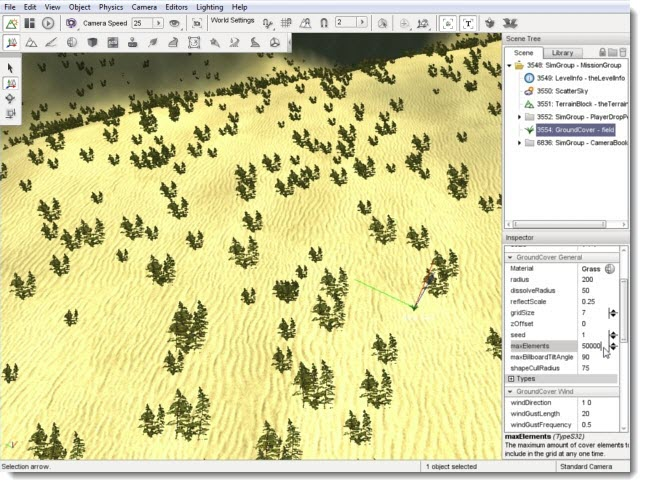
The default values for the clump properties are all 1. This means the system will place a single shape within a 1 meter spacing. Set your GroundCover properties to the following:
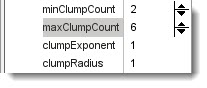
The system will now procedurally place between two and six objects within a one meter space, creating clusters of shapes around the terrain:
(click to enlarge)
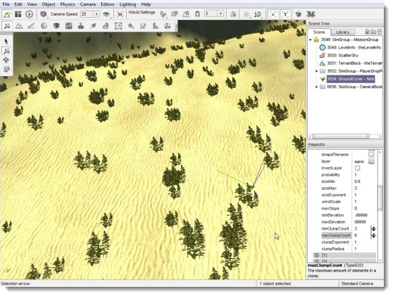
If there is too much clustering or your objects are
unrealistically overlapping, you may need to increase the clumpRadius.
Go ahead and set the clumpRadius to 5. There will still be clustering,
but now the objects should space out more evenly:
(click to enlarge)
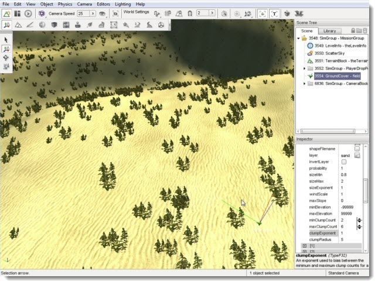
These were a few of the basic modifications you can make to
a GroundCover object. There are a few additional properties which will
be covered in later sections. For now, take some time to experiment
with the values mentioned above. When you are ready proceed to the next
section.
3D Shapes
Up till now, the shapes that the GroundCover has been placing have been rendered using billboards. If you are unfamiliar with this term, a billboard is a way of faking the appearance of a 3D object by using a flat image that is rotated as the camera moves so that it is always facing the camera. The material we have been using is a simple 2D image with transparency, representing a plant.
By just displaying this simple image and always rotating it to face the camera we avoid having to create an actual model of a plant with a trunk, limbs, and hundreds of leaves. Displaying and rotating a simple image in this manner uses much less processing power than rendering a full 3D model and all its details. Multiply that performance savings times the number of shapes that are generated by a GroundCover object and the result is more power for other aspects of your game, while still producing an adequate depiction of ground foliage.
However, if you wish to automate the placement of real 3D objects in your level, you can still do so using the GroundCover object. In this next example, we will replicate a 3D model of a tree rather than a billboard image of a tree. Keep in mind that creating a large forest using this method is not the best approach. It is merely an example using a 3D shape which you should have available to you since it is included in the Full template. Creating such a forest for use in a real level is best left up to the Forest Editor, since it is a more powerful tool designed to do just that. If you are not concerned with precision and collision, then the GroundCover object might work just fine.
Start by deleting any existing GroundCover objects in your scene. Using the same procedure as before, switch to the Terrain Painter tool and paint a much larger portion of the terrain with your secondary material:
(click to enlarge)
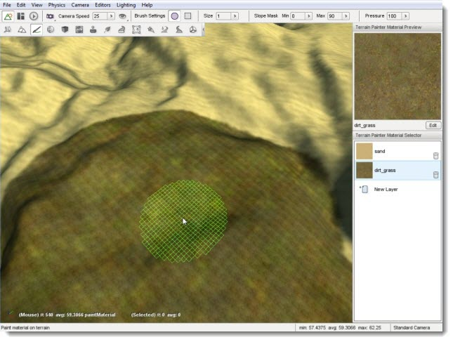
Now add some trees using a Ground Cover object. Switch to the Object Editor tool; select the Library tab; select the Level sub-tab; double-click the environment folder; locate the GroundCover object and double-click it. The Create Object dialog box will appear:
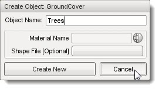
Enter a name for your ground Cover object, then click on the Shape File [Optional] field which will open a file browser. Navigate to the
game/art/shapes/trees/defaulttree directory within your project. Select the
defaulttree.DAE file, then click the Open button.
(click to enlarge)
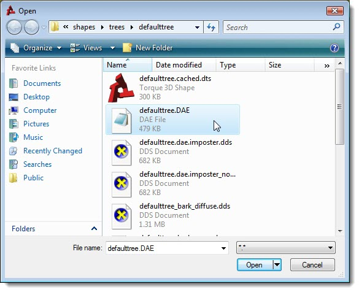
Your selection will be placed in the Shape File [Optional] field and will be the shape that the Ground Cover object will replicate. Click the Create New button to add your new GroundCover object to the scene. Unlike material billboards, the GroundCover object should be rendering full 3D models. Without designating a terrain material, the trees should be located on your entire terrain:
(click to enlarge)
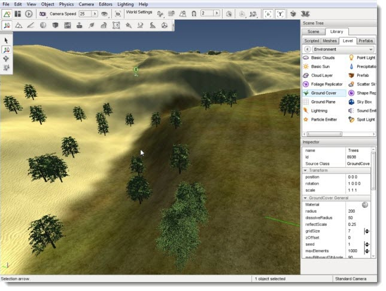
Scroll down to the Types[0]->layer property.
Click on the blue box to open up the Material Selector. Once the
dialog appears, select the alternative material (such as the
dirt_grass):
(click to enlarge)
After you click the Select button, the trees will
only be placed on the terrain material you picked. In this case, the
trees will only be located on the grassy terrain:
(click to enlarge)
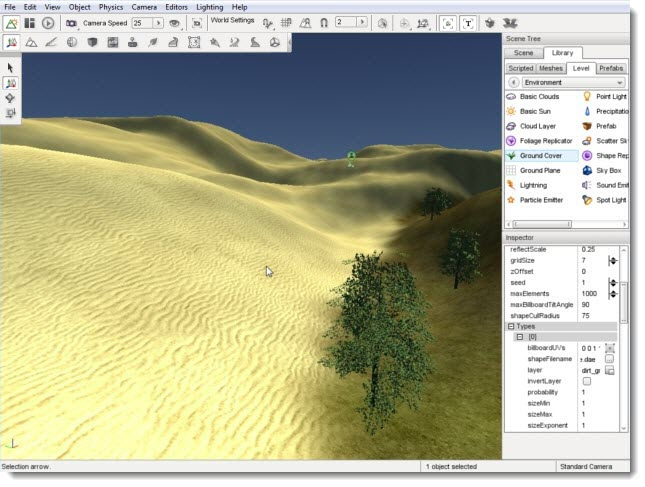
The adjusting properties will affect 3D models the same as
the billboards we were editing earlier. For example, you can
increase the maxElements to a very high number to simulate a forest only on the grassy terrain:
(click to enlarge)
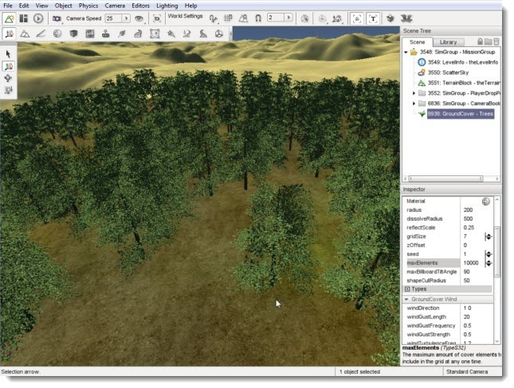
There is one property that is very specific to 3D models. You might notice that the trees disappear very quickly when you move away from them. This is controlled by the
shapeCullRadius property. This property is the distance at which 3D shapes are completely prevented from rendering.
Low values might be OK for first person views, but at a higher range the results will not appear as you might expect. For example, this terrain looks void of trees in the upper half when in fact they are there but they are not being displayed. They are not displayed because they are further away from the camera than the shapeCullRadius distance of the Ground Cover Object:
(click to enlarge)
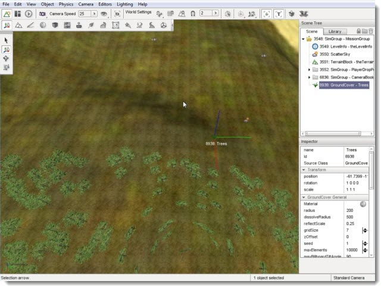
If you increase the value of shapeCullRadius, you will be able to see 3D shapes further out from where the camera is located. Try setting the value to something like 500. If you want your whole terrain to be within the area covered by the shapeCullRadius, then you must enter a value at least as great as the Resolution property of the TerrainBlock when you created it:
(click to enlarge)

You should now have a basic understanding of how the
GroundCover system works. However, instead of moving on to the next
guide we are going to dive deeper into the features that make Torque
3D GroundCover so powerful and flexible. Continue reading to learn a
few more advanced modifications.
Advanced Modifications
In the same level you have been using, delete all GroundCover
objects. If you have already discarded the level, then create a new
terrain and make sure you have at least two separate terrain materials
being rendered. Create a new GroundCover object, filling out only its
name. Leave the other fields blank:
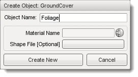
Click the Create New button to add the new
GroundCover object to the level. Next, we will create a new material
for this GroundCover. However, this will be a special image. Instead of
a single material representing an individual plant, we are going to
create a material that represents five plants.
Save the following image to your game/art/environment/ directory:
foliage.png
(click to enlarge)
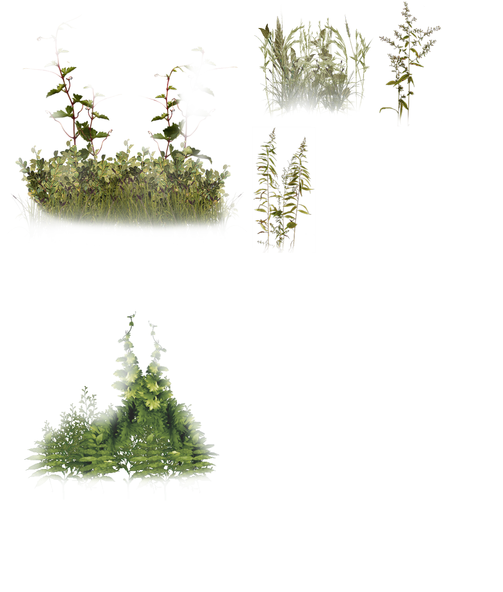
Notice how this new image file contains several plant images, stitched together in a single 1024x1024 png file. The GroundCover can easily separate these individual plant images in order to use them all, but it needs a material to do so. Select your new GroundCover object. Scroll through the properties until you get to the GroundCover General section. Click on the Material Selector icon .
Now we're going to go through the process of creating a new material like we did before - you know the drill. When the Material Selector appears, click on the "Create New Unmapped Material" button. Then click the Select button.
At this point, the new material has been applied to the GroundCover. We have a material, but it has not been assigned a texture so once again you will see the special "No Material" texture. Go ahead and click on the Material Editor icon to activate the tool:
Activate Material Editor
When the Material Editor opens, your GroundCover material will already be the active entry. Change the Material name to
Foliage, hit Enter, then click the Floppy Disk icon to save.
NOTE: You MUST press the Enter key before clicking the save icon or your new material WILL NOT be saved! Next, scroll down to the Basic Texture Maps section. Right now the Diffuse Map is assigned to the default "No Material" texture. Click on the preview image or the Edit button. A file browser should pop up allowing you to select a texture. Navigate to the
game/art/environment directory. Select the foliage.png texture that you just placed there, and then click Open.
(click to enlarge)
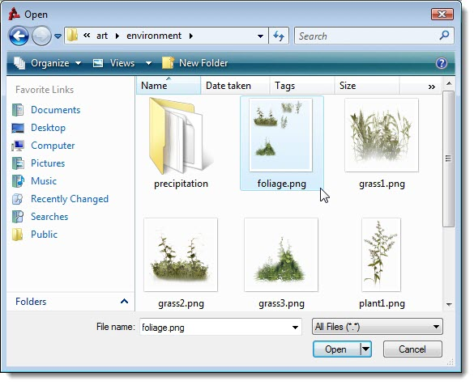
Your initial Foliage material is going to look very odd. This is due to the Alpha Threshold being disabled which causes the black areas to show as black rather than be transparent:
(click to enlarge)
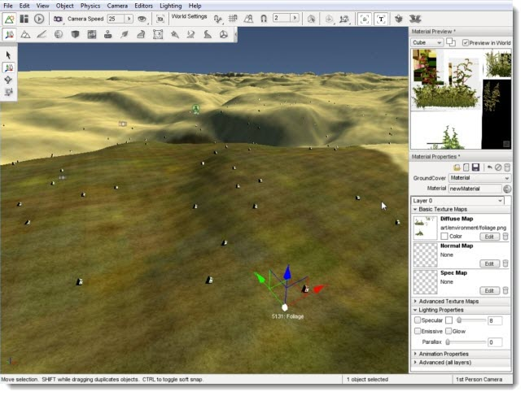
To fix this, scroll down to the Advanced (all layers) section of the Material Editor. Check the Alpha Threshold box, then set the value to something close to 20.13 (or whatever looks
best to you):
Save your material by clicking the floppy icon again. Once you are finished with your material, it should resemble the following in the preview:
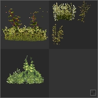
Now is a good time to also save your level if you want. When you are ready switch back to the Object Editor using F1. Your GroundCover should now be rendering the combined plant material.
(click to enlarge)
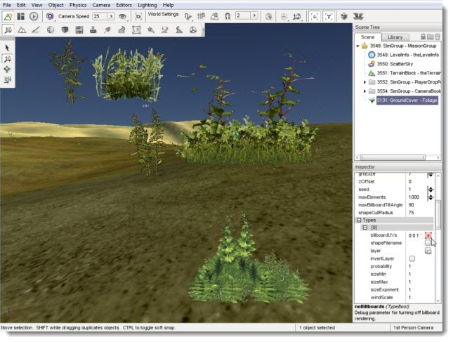
Within each Types[x]
entry, we can use the UV Editor to designate which part of the material to use
for the billboard rendering. The UV Editoris located under the Types section of
the properties, in the billboardUVs field. Click on the square icon to activate the UV
Editor:
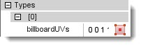
The UV Editor is extremely simple to use. When the dialog
appears, you will be presented a box comprised of nine points. You can
drag the edges of the box around to isolate specific parts of a
material:
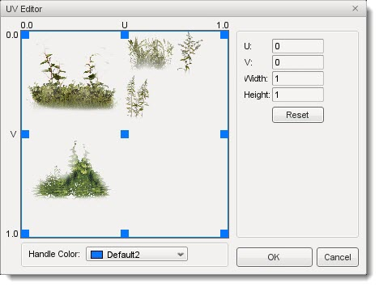
With the foliage material, this is exactly what we need to draw a single plant for this layer. Choose one of the plants you wish to render on the grass, such as the one in the bottom left. Click and drag the blue boxes until just that plant is enclosed in the square:
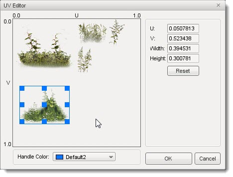
Once you are certain of your placement, click the OK button. The Types[0] layer will now only be rendering the section of the material that you surrounded. Rather than create five separate GroundCover objects, you can use a single material and one GroundCover object with each layer displaying a different plant, that is, section of the image.
(click to enlarge)

In this manner we can also isolate the individual plant types to specific terrain textures. In Types[0]>layer, click the box icon to bring up the Material Selector. Select a terrain material to limit this plant to:
(click to enlarge)
Go ahead and make a few more edits to Types[0], such as adjusting the clumping properties. Ultimately, you are aiming to create something that appears varied, as it would in nature, rather than a systematic placement of objects:
(click to enlarge)
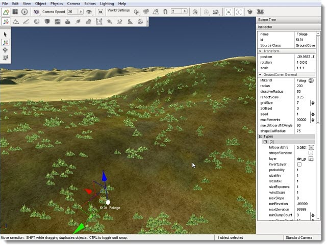
For the next step, collapse the [0] entry and expand Types[1]. For this section of the GroundCover, we are going to render another piece of the foliage from that same texture on a separate terrain material. Go ahead and assign
Types[1]->layer to another material that is in your level:
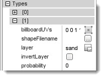
After you have assigned the terrain material, you might notice nothing is rendering. This behavior is controlled by the probability property:
(click to enlarge)
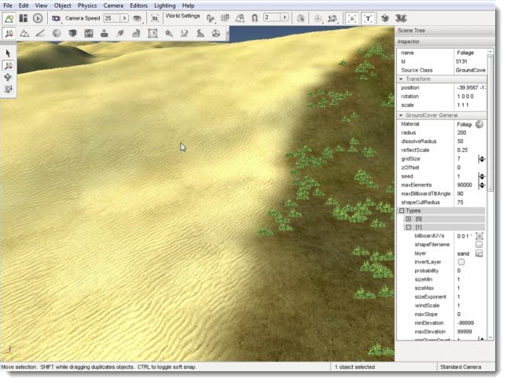
This property is a decimal value, which represents the likelihood (percentage) of an shape being placed by the GroundCover object. A value of 0.0 results in a 0 percent change, 0.5 is a 50% chance, and 1.0 is 100% chance that an object will be placed. By default, the probability is set to zero for all Types except Types[0].
Go ahead and set Types[1]->probability to 1,
which will fully activate the placement of the foliage material. We
need to make two more modifications. First, activate the UV Editor for
this entry. Drag the UV boundaries to a less green image:
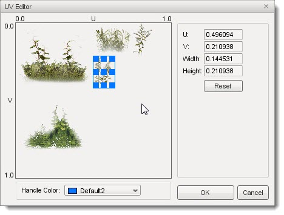
Next, set Types[1]->layer to another material in your level to isolate the placement of our new billboards. The final result should be Types[0] rendering a one type of plant on one material, and Types[1] rendering a different plant on the other material:
(click to enlarge)
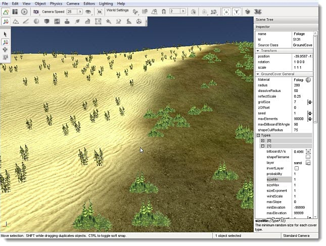
Separating billboards from within a single material is not the only function you can do when modifying the Types section. It is possible to mix in 3D shapes as well. Collapse Types[0] and Types [1], then expand Types [2]. Locate the Types[2]>shapeFilename property - click the box next to it:
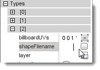
Navigate to the game/art/shapes/trees/defaulttree directory. Select the defaulttree.DAE file, then click open.
(click to enlarge)
After you click open, the 3D shape will be set. Next, assign Types[2]->layer to the grass terrain material and set Types[2]->probability to 1. This will result in many trees rendering on the grass terrain:
(click to enlarge)
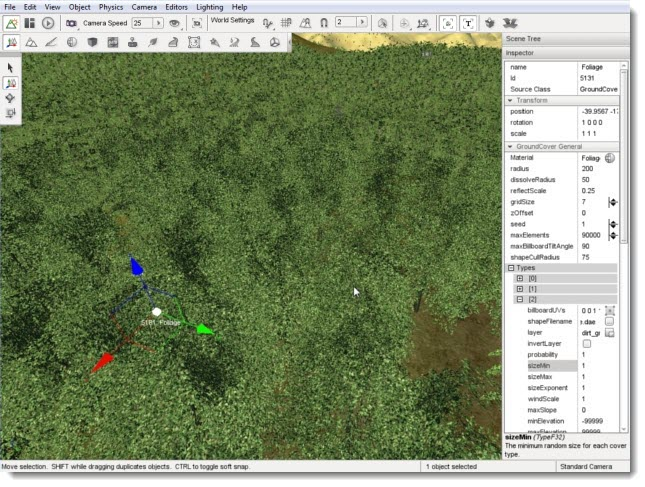
For our example, there are way too many trees. Under the GroundCover General section we have the maxElements property set to 90,000. If we adjust this number, we will have less trees being placed. However, this also affects our other layers. This can be a problem.
Rather than fiddling with the maxElements property, we can
adjust Types[2]->probability. Set the value of probability to 0.1,
which will cause the GroundCover to place quite a few less trees:
(click to enlarge)
As you can see, the GroundCover is extremely powerful. With
a single object, we were able to place multiple types of foliage
(billboards), separate the foliage based on terrain material, and even
mix in 3D models:
(click to enlarge)
Conclusion
The GroundCover object can add an immense amount of ambiance to your level. It is one of the most powerful and flexible Torque 3D objects. Continue experimenting by trying different types of settings, art, and level arrangements. |
{kind=link}
{kind=link}
{kind=link}
{kind=link}
{kind=link}
{kind=link}
{kind=link}
{kind=link}
{kind=link}
{kind=link}
{kind=link}
{kind=link}
{kind=link}
{kind=link}
{kind=link}
{kind=link}
{kind=link}
{kind=link}
{kind=link}
{kind=link}
{kind=link}
{kind=link}
{kind=link}
{kind=link}
{kind=link}
{kind=link}
{kind=link}
{kind=link}
{kind=link}
{kind=link}
{kind=link}
{kind=link}
{kind=link}